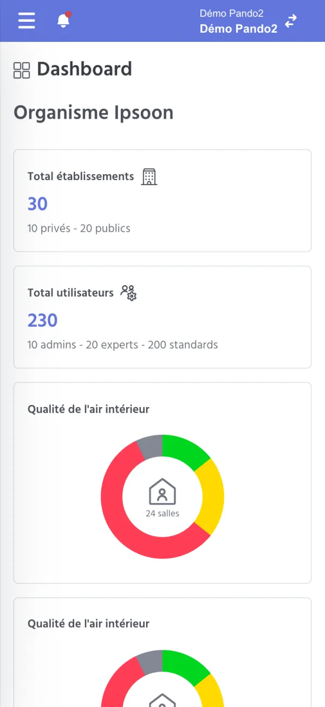
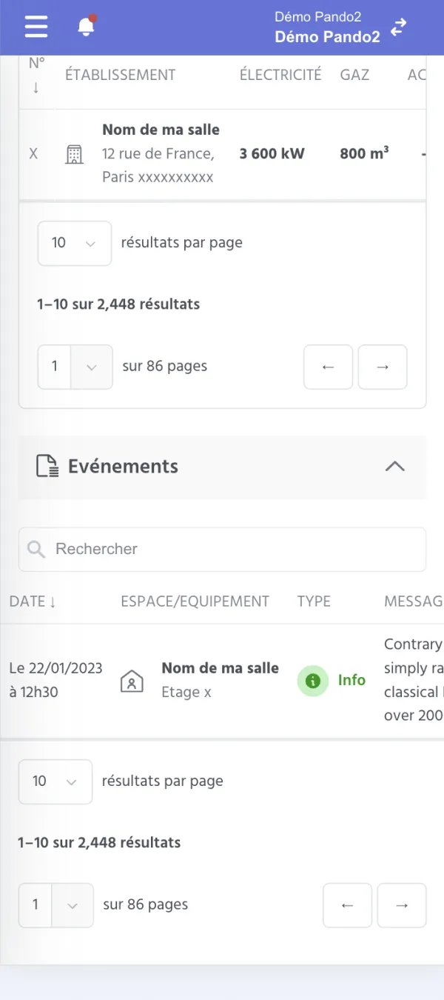

Pando2
Interfaces for a building management software (SaaS) that monitors air quality (including CO2 levels) and energy use.


Measuring a building's air and energy
Pando2 helps monitor air quality (including CO2 levels) and energy use in buildings, using sensors installed in the rooms.
In July 2023, I started a freelance assignment within the development team. My role: building the application's interfaces from a designer's mockups, for desktop and mobile, with shared components and some Stimulus.js for the interactions.
The application's interfaces
- 2023Application base: side menu, header, tabs, tables, forms, modals and side panels, for desktop and mobile.
- 2023Dashboards: charts, map of sites, weather and public data, comparison of measurements.
- 2023Display screen: a screen showing the air quality of a room, with an animated SVG background.
- 2024Assessment forms: multi-step flows, introduction modals and summaries.
- 2024Action plans: tables and panels to create and track actions.
- 2024PDF report: layout of the report pages.
A bit of interaction
Some examples of small Stimulus.js controllers: tabs, comparison menu, introduction modals for the forms, multi-step forms, progress bar during a file upload.
Some screens
Screenshots of my integration pages, run locally with sample data. Click a screenshot to enlarge it.



On mobile: the display screen, the dashboard, the ranking and the tables
Building interfaces in a team, over time
On Pando2, I learned to work in a team on a large Ruby on Rails application. At first, I built the pages in Slim (a template language that produces HTML) and Sass from the designer's mockups, with reusable components, and then the team connected them to the data.
I also added interaction with Stimulus.js, and discovered SVG animation with the display screen.